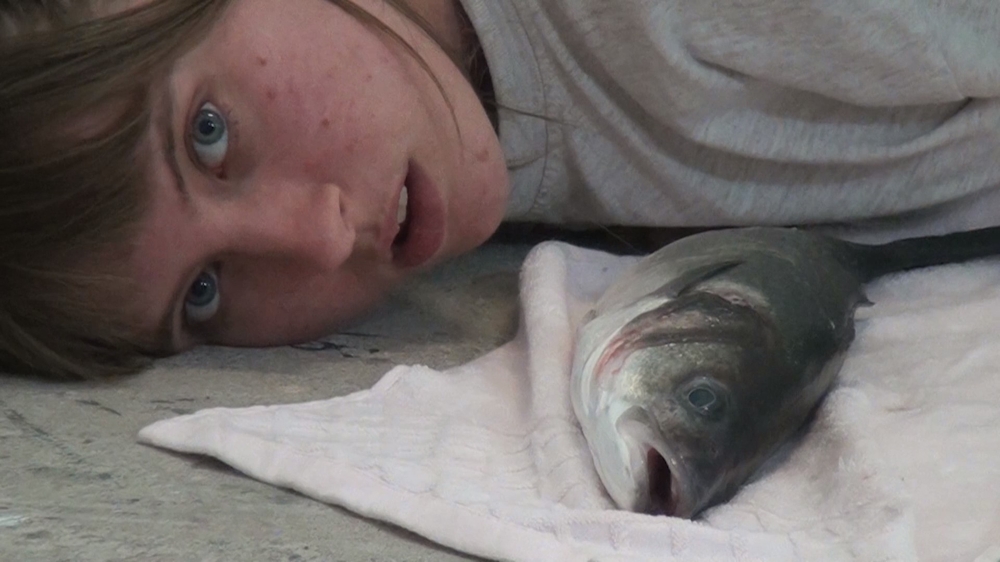
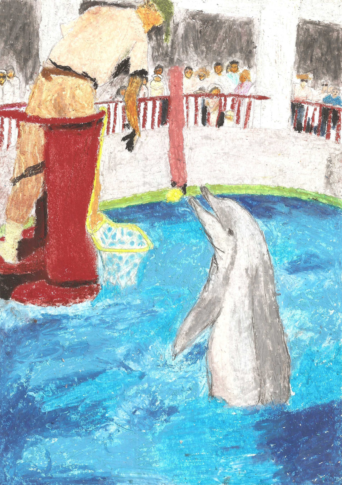

bio
Jojo Knowles (Sweden/USA) is a conceptual artist working with installation, sculpture, video, performance, and writing. She uses the abject/disgust as a political force against patterns of discrimination, centering around embracing that which makes us animal and “disgusting” to foster empathy and self-awareness. This research leads into a critical examination of the relationship between humans and non-human species, specifically in Western societies, in the midst of ecological crisis. Jojo is searching for a way to mend and re-create relationships with animals we domesticated and searching for a way to de-domesticate us. She makes work about the organic body in an increasingly inorganic world. Her work delves into psychological methods, using humor and emotion to break down taught frameworks of discrimination and exploitation. Her work culminates in uncanny sculptures and performances where material exploration and artistic transformation are central.
cv
PRO Invest Grant Stroom Den Haag 2026
PRO Onderzoek Grant Stroom Den Haag 2025
Research & Development Grant Amartefonds 2025
Stroom Young Talent Award 2024
Solo shows
Collateral Pulchri Studio, The Hague 2025
I'll take your waste in my hands Nieuw Dakota, Amsterdam 2024
Sleep Gunk Waterkant bunker, The Hague 2023
Group shows
Amarte Wonderland Club Raum, Amsterdam 2026
COME TOGETHER (11) Theater Frascati, Amsterdam 2026
Dingen die niet verkopen, verkopen u dingen Dingen die niet verkopen, Antwerp 2025
DUPLEX AiR, Lisbon 2025
Tense Tides? Act 3 Nieuw Dakota, Amsterdam 2024
OPENING + exhibition The View, co-founded artist run initiative/studio in Escamp, The Hague 2024
Fem Disturbances Roodkapje, Rotterdam 2024
Arty Party Melkweg, Amsterdam Sep 2024
Graduation Show Royal Academy of Art, The Hague 2024
UBIK Performance night WORM, Rotterdam Jan 2024
Everything that grows underground Pulchri Studio, The Hague 2023
Performance Cultuurlab, Delft 2021
Publieksmedewerker NEST contemporary exhibition space, The Hague current
Performance for Shana de Villier's "I am Frankie, and you still love me" Das Leben am Haverkamp, The Hague May 2025
Camp leader Barnens Ö, Sweden 2021-2023
Duplex AiR Lisbon, Portugal April-May 2025
Bachelor Fine Arts Royal Academy of Art, The Hague Netherlands 2020-2024
Preparatory Year Royal Academy of Art, The Hague Netherlands 2019-2020
International Baccalaureate Diploma Program Katedralskolan Lund, Sweden 2016-2019
